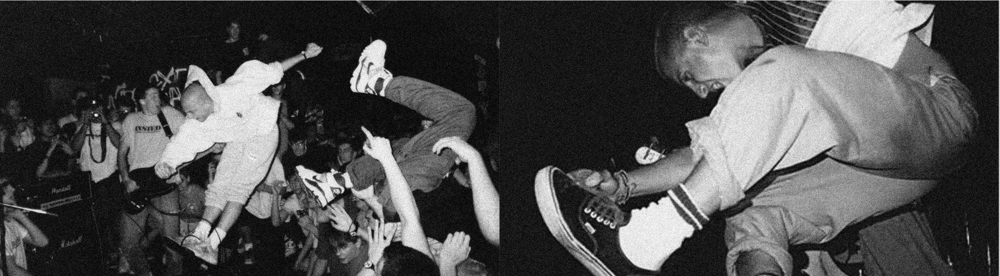

SOURCE: Rich Music Online
WORDS: Prabu Pramayougha
Ketika tren musik hardcore punk mulai meredup di pertengahan tahun 80-an karena mulai banyak band yang bubar atau berubah genre, banyak yang mengira bahwa genre musik yang dipopulerkan oleh Black Flag tersebut akan benar-benar mati. Namun tidak lama kemudian, tiba-tiba kembali lagi dengan format yang lebih kuat dan narasi yang lebih jelas. Di era awal kemunculannya hardcore punk sangat erat dengan narasi yang kelam dan depresif. Tapi narasi zaman lama tersebut tiba-tiba bertransformasi secara radikal berkat pergerakan dari sekelompok anak muda di New York yang tergabung di beberapa band dan melabeli tongkrongan mereka dengan nama Youth Crew.

Youth Crew awalnya hanyalah nama tongkrongan yang diinisiasi oleh band hardcore punk gelombang kedua legendaris, Youth Of Today dan beberapa temannya. Salah satu gerombolan anak muda yang sering nongkrong di awal-awal kemunculan Youth Crew adalah band Crippled Youth yang kini telah berubah nama menjadi Bold. Tongkrongan tersebut terbentuk karena kecintaan mereka terhadap hardcore punk dan semua orang di dalamnya memang menjalani pilihan gaya hidupnya sebagai straight edge.
Nama Youth Crew mulai diasosiasikan sebagai sebuah pergerakan di dalam kancah hardcore punk dikarenakan Youth Of Today mempunyai satu lagu yang berjudul “Youth Crew” di mini album perdana mereka, Can’t Close My Eyes (1985). Padahal narasi liriknya hanya bercerita soal bangganya Ray Cappo soal tongkrongannya yang pro-aktif dan bersih dari adiksi dan candu. Tapi banyak penggemar hardcore punk yang menanggapinya sebagai sebuah anthem dari subgenre hardcore punk yang baru dan lebih bersemangat.
Hal itu bukan hanya asumsi para pendengar belaka, karena di jenjang waktu yang bersamaan banyak orang yang terinspirasi oleh apa yang Youth Of Today lakukan dan sampai akhirnya membentuk band-nya sendiri.
Band-band hardcore punk yang muncul di era tersebut memiliki estetika fashion, tema lirik, dan musikalitas yang kurang lebih mirip dengan musik yang dimainkan oleh Youth Of Today. Itulah sebabnya Youth Crew diasosiasikan dengan pergerakan para band hardcore punk penganut straight edge di era pertengahan 80-an.
Beberapa band hardcore punk yang dianggap punya peran penting dalam merebaknya tren Youth Crew di era tersebut di antaranya ada Gorilla Biscuits, Chain Of Strength, Crippled Youth (yang kelak berevolusi menjadi Bold), Insted, dan Project X. Mereka semua sama-sama band straight edge dan punya banyak lagu yang bernarasi soal pentingnya kebersamaan dan hidup positif. Nothing is more Youth Crew than that.
Selain terbedakan secara musikalitas, estetika fashion yang dikenakan oleh para penganut gaya Youth Crew pun terbilang lumayan revolusioner pada masanya. Ketika di zaman itu para punk rock masih menggunakan jaket kulit, boots, spike, emblem dan aksesoris serba peniti plus rantai sebagai bentuk ekspresi perlawanan mereka akan kehidupan normal, para kaum Youth Crew justru mengambil arah yang sebaliknya. Mereka berpakaian normal layaknya gaya anak muda sehari-hari. Sweater hoodie, kaos oblong, celana pendek, dan sneakers hingga terkesan atletis. Konon katanya mereka berpakaian seperti itu pun ternyata memiliki statement bahwa it’s totally punk to dress normally yet you still can mosh at ease.
Meski memiliki statement untuk menginjak balik citra punk rock yang penuh kekerasan, nihilisme, dan bermentalitas teler, estetika fashion Youth Crew pun tak luput dikritik oleh para punk rockers lainnya di era tersebut. Banyak yang menganggap bahwa fashion Youth Crew membuka gerbang terlalu luas sehingga orang-orang di luar scene bisa dengan mudahnya keluar masuk dengan hanya mengaku-ngaku sebagai anak hardcore lewat berpakaian ala anak-anak Youth Crew. Anggapan tersebut pernah direspon oleh John Porcelly, gitaris Youth Of Today pada sebuah wawancara. Dia menganggap bahwa fenomena tersebut memang mungkin terjadi. Tapi dia meyakini bahwa itu bukan hanya sekedar fashion belaka, tapi juga sebuah cara pandang dan sebuah reaksi untuk melawan lewat cara yang lain.
Meski era keemasan Youth Crew sudah lewat, namun masih banyak band-band hardcore punk yang mempercayai bahwa konsep itu masih relevan untuk dijalankan sampai hari ini. Ambil contoh di era 90-an ketika musik hardcore mulai teracuni beatdown metal, masih ada beberapa band hardcore punk yang memainkan gaya Youth Crew. Beberapa di antaranya adalah In My Eyes, Bane, Ten Yard Fight, Shutdown sampai The Geeks.
Bahkan di era millenium pun masih banyak band hardcore punk yang mengamalkan kaidah Youth Crew pada musiknya, seperti Stick Together, Mindset, sampai Champion. Di indonesia sendiri ada Blind to See, Brave Heart, Forstand dan masih banyak lagi. Ini merupakan bukti bahwa nilai-nilai Youth Crew pada hardcore punk merupakan sebuah pergerakan yang bisa menggugah hati banyak orang, karena memberikan sebuah alternatif gaya hidup dan cara pandang yang masuk akal untuk bisa bergerak secara komunal di dalam sebuah scene musik. Buktinya, masih banyak band-band dan label hardcore punk yang memainkan hardcore atau merilis karya-karya dari band Youth Crew sampai saat ini.